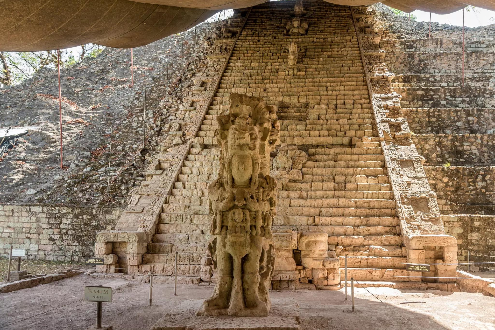

Parque Arqueológico de Copán Ruinas

Descripción
Copán Ruinas es un destino turístico ubicado en el occidente de Honduras, famoso por sus antiguas ruinas mayas, declaradas Patrimonio de la Humanidad por la UNESCO. Destaca por su riqueza histórica, sus hermosos paisajes y sus tradiciones culturales, convirtiéndose en un lugar ideal para conocer la historia y la belleza de Honduras.
- Parque Arqueológico de Copán.
- Escalinata Jeroglífica.
- Museo de Escultura Maya.
- Macaw Mountain.
Principales atractivos:
Dificultad de acceso:
Baja a moderada. Se llega por carretera pavimentada, aunque el trayecto es largo desde las principales ciudades.
Distancias y tiempos de traslado
| Destino | Desde Tegucigalpa | Desde San Pedro Sula | Desde La Ceiba | Altitud aprox. | Tiempo estimado |
|---|---|---|---|---|---|
| Copán Ruinas | 400 km | 180 km | 500 km | 600 msnm | 6-7 h |
| El Puente | 120 km | 200 km | 400 km | 800 msnm | 3-4 h |